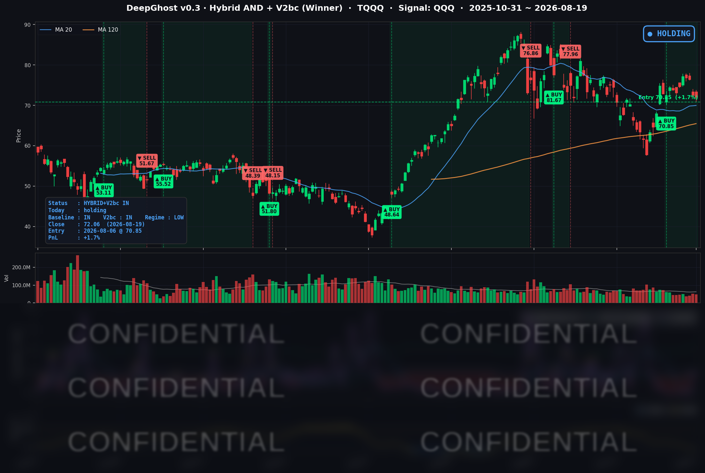

👻 매일 시그널과 히스토리를 홈페이지에서 한눈에 → www.ghostai.co.kr
재무부가 장기 국채 바이백을 두 배로 늘리면서 30년물 금리가 하루에 9bp 넘게 내렸습니다. 이번 기술주 약세가 금리 문제가 아니라는 뜻입니다. 거시는 견고하나 문제는 반도체 투자자들의 심리입니다. 오늘 신호 강도는 어제 보다는 나아졌습니다. 오늘 다시 반등하면 상승 추세로 이어질 듯 합니다. 미래는 아무도 모릅니다. 예측하지 마시고 대응하시기 바랍니다.
📊 오늘의 매매 신호
| 항목 | 내용 |
|---|---|
| 오늘 할 일 | ✅ 아무것도 안 해도 됩니다 |
| 포지션 상태 | 📈 TQQQ 보유 중 (IN POSITION) |
| 매수 진입일 | 2026-08-06 (10거래일째) |
| 진입가 → 현재가 | $70.85 → $72.06 |
| 현재 포지션 수익 | +1.7% |
TQQQ 시그널 — IN POSITION
현재 상태: 매수 포지션 유지 중 | 이번 포지션 수익률 +1.7%

전략의 TQQQ 트랙은 8월 6일 진입 자리를 10거래일째 유지하고 있습니다. 오늘 새로 나온 매수·매도 신호는 없습니다. 평가수익은 어제 +2.4%에서 +1.7%로 조금 더 줄었습니다.
지금은 수익 완충이 상당히 얇아진 구간입니다. 진입가까지의 거리가 하루치 평범한 하락 폭 정도로 좁혀졌고, 반대로 청산 신호까지의 거리는 오히려 어제보다 벌어졌습니다. 즉 평가이익이 사라진 뒤에도 신호는 한동안 보유를 유지하는 구간에 들어와 있다는 뜻입니다.
오늘 미국 시장 — 시황 요약
지수 마감
| 지수 | 종가 | 등락률 |
|---|---|---|
| S&P 500 | 7,707.98 | +0.21% |
| 나스닥 종합 | 26,331.09 | +0.16% |
| 다우존스 | 53,463.05 | +0.22% |
| 러셀 2000 | 3,032.94 | +0.50% |
| QQQ (나스닥100) | 716.08 | -0.20% |
S&P 500은 3거래일 연속 하락을 끊고 반등했고, 소형주인 러셀 2000이 대형주를 앞섰습니다. 그런데 나스닥100만 마이너스로 마감했습니다. 나스닥 종합이 오르는데 나스닥100이 내렸다는 건, 지수를 끌어내린 힘이 소수의 대형 반도체·기술주에 몰려 있었고 그 아래 종목 다수는 올랐다는 뜻입니다.
다만 상승의 저변이 넓었던 것은 아닙니다. 대형주 40종을 집계하면 오른 종목이 18개, 내린 종목이 22개로 하락이 더 많았습니다. 오늘은 금리 하락 수혜와 금·헬스케어 강세가 반도체·산업재 약세를 겨우 상쇄한 장세였습니다. 최근 5거래일 기준으로 보면 QQQ가 -1.05%로 주요 지수 중 가장 부진하고, TQQQ는 -3.40%로 그 약세가 증폭돼 나타납니다. 8월 들어 주도권이 빅테크에서 빠져나가고 있다는 신호입니다.
국채 금리 동향
| 만기 | 수익률 | 전일 대비 |
|---|---|---|
| 3개월 | 3.700% | -0.5bp |
| 5년 | 4.353% | -1.4bp |
| 10년 | 4.653% | -5.3bp |
| 30년 | 5.194% | -9.1bp |
만기가 길수록 크게 내린 하루였습니다. 30년물이 -9.1bp로 가장 많이 빠진 반면 3개월물은 사실상 제자리였습니다. 이 비대칭에는 분명한 이유가 있습니다. 재무부가 이날 오전 10~30년 장기 국채 매입(바이백) 규모를 회당 최대 20억 달러에서 최소 40억 달러로 두 배 이상 늘리겠다고 발표했습니다. 9월 9일부터 11월 4일까지 적용됩니다. 매입 대상이 정확히 장기 구간이니 장기물만 집중적으로 랠리한 것입니다.
배경은 이틀 전 기록에 있습니다. 30년물은 8월 17일 5.309%로 마감해 2007년 6월 이후 약 19년 만의 최고치를 찍었습니다. 장기물 매도세가 유동성 우려를 자극하자 재무부가 진화에 나선 구도입니다. 따라서 오늘의 금리 하락은 경기 둔화 신호가 아니라 수급 정책이 만든 기술적 결과로 읽는 편이 정확합니다. 실제 매입 시행은 9월 9일부터라 그 사이에는 수급 공백이 남아 있습니다.
장단기 스프레드(10년 - 3개월)는 +95.3bp로 정상적인 우상향 곡선을 유지했습니다. 침체 신호는 나오지 않았습니다. 다만 3개월물 3.700%는 현재 정책금리 목표범위(3.50~3.75%) 상단 부근으로, 단기 자금시장이 가까운 시일 내 인하를 사실상 배제하고 있음을 보여줍니다.
연준 발언 & 금리 패스
이날 오후 2시(미 동부시간) 7월 FOMC 의사록이 공개됐습니다. 신규 연설이 아니라 의사록이 당일 유일한 연준 이벤트였습니다.
- 정책금리 3.50-3.75% 동결, 표결은 9 대 3. 반대표를 던진 해맥(클리블랜드)·카시카리(미니애폴리스)·로건(댈러스) 세 명은 즉시 0.25%p 인상을 주장했습니다.
- 의사록에는 "물가가 내려오지 않으면 추가 긴축이 필요할 것"이라고 평가한 위원이 다수였다는 대목이 담겼습니다. 일부는 현재 금융여건이 충분히 긴축적이지 않을 수 있다고 봤습니다.
- 물가가 목표 대비 높은 원인으로는 중동발 에너지 공급 충격과 관세 효과가 지목됐고, 상승 압력이 광범위한 품목에 걸쳐 있다는 관찰도 함께 실렸습니다.
요지는 분명합니다. 지금 연준 안에서 오가는 논의는 인하가 아니라 인상입니다. 인하를 기대해온 투자자에게는 반전에 가까운 내용입니다.
그런데도 오늘 금리는 내렸습니다. 오전의 바이백 뉴스가 오후의 매파적 의사록을 덮은 것입니다. 다만 그 흔적은 곡선에 남았습니다. 매파 연준이 단기물을 붙들어 놓은 상태에서 장기물만 정책 매입으로 내려온, 교과서적인 조합입니다. 다음 FOMC는 9월 16일이며, 그에 앞서 8월 28일 워시 의장의 첫 잭슨홀 기조연설이 예정돼 있습니다(잭슨홀 일정은 복수 매체 보도 기준의 참고 일정입니다).
오늘의 핵심 이슈
- 재무부의 채권시장 진화 작전. 베선트 재무장관 주도로 장기 국채 바이백을 두 배 이상 확대한다고 발표했습니다. 30년물이 19년래 최고 수익률까지 치솟은 직후 나온 대응이며, 효과는 즉각적이었습니다. 30년 -9.1bp, 10년 -5.3bp에 달러도 약세로 돌아섰습니다. 하루 장세 전체를 규정한 단일 이벤트였습니다.
- 금 하루 +4.90% 폭등. 금 선물이 4,366.00달러에서 4,579.80달러로 뛰었습니다. 자체 검증 결과 보유 데이터 6,515거래일 가운데 상위 11번째에 해당하는 일간 상승률입니다. 갭 상승 후 하루 종일 눌리지 않은 강한 흐름이었고, 금 ETF(GLD)도 +3.84% 올랐습니다. 금리·달러 동반 하락에 스태그플레이션 우려가 겹친 결과입니다. 20일 +12.50%, 1년 +37.25%로 단발 이벤트가 아니라 가속 중인 추세입니다.
- 반도체 장비주 붕괴 — 원인은 금리가 아니라 AI 투자 재평가. 램리서치 -6.33%, KLA -3.86%, 어플라이드머티리얼즈 -3.53%, 브로드컴 -4.61%, 인텔 -4.02%가 무너졌습니다. 촉발 요인으로는 월스트리트저널 보도가 지목됩니다. 상위 기술기업 9곳이 AI 관련으로 약 3조 달러 규모의 장부 밖 약정을 안고 있으며 이것이 연 6,000억 달러 수준인 전통적 설비투자보다 빠르게 늘고 있다는 내용입니다. 여기에 AI 모델 기업들의 매출 속도가 시장 기대에 못 미친다는 관측이 겹쳤습니다. 할인율이 내려가는 날에 이만큼 팔렸다면 그건 밸류에이션이 아니라 수요와 실적에 대한 의심입니다. 다만 오늘은 이것이 추세 전환인지 헤드라인 반응인지 아직 판별되지 않은 첫 세션입니다.
변동성 & 투자심리
- VIX (변동성 지수): 15.84 → 14.89 (-6.00%). 20일 평균 16.31, 60일 평균 16.95보다 뚜렷이 낮고, 최근 1년 기준 하위 8% 수준입니다.
- 공포탐욕지수: 8월 18일 종가 53.6(중립)에서 약 56(탐욕 경계)으로 소폭 회복했습니다. 출처별 편차가 있어 당일 확정값으로 보기는 어렵습니다.
숫자만 보면 시장은 조용합니다. 그런데 물가는 4%대이고 중동에서는 전쟁이 이어지며 30년물 금리는 19년래 고점권입니다. 이런 환경에서 변동성 지수가 1년 최저권이라는 건 안도보다는 안일로 읽는 편이 안전합니다. 실제로 최근 나스닥100의 실제 등락 폭은 변동성 지수가 시사하는 수준보다 눈에 띄게 큽니다. 옵션시장이 매크로 위험을 거의 값에 넣지 않고 있다는 뜻이고, 하방 사건이 터지면 재평가가 가파를 수 있습니다. 레버리지 상품은 그 재평가를 그대로 받습니다.
오늘 가장 선명한 모순도 여기에 있습니다. 주식시장의 변동성 지표는 1년 최저권인데, 금은 역사상 손꼽히는 급등을 했습니다. 두 시장이 위험을 정반대로 값매기고 있는 셈이고, 이런 괴리는 대체로 오래가지 않습니다.
매크로 & 원자재
- 유가: WTI $84.45 (-0.58%), Brent $91.60 (+0.64%)
- 금: $4,579.80 (+4.90%), GLD ETF $413.84 (+3.84%)
유가는 혼조였지만 절대 수준이 여전히 높습니다. WTI와 브렌트의 가격 차가 7달러 이상으로 벌어져 있다는 점은 국제 공급 차질이 미국 내수보다 심각하다는 구조를 보여줍니다. 실제로 7월 유조선 피격 이후 브렌트가 한때 105달러까지 치솟았고, 3분기 공급 전망도 하향됐습니다. 이 에너지 충격이 물가를 밀어올리고, 그것이 연준의 인상 압력과 장기금리 상승으로 이어지며, 다시 금 수요를 자극하는 고리가 지금 시장을 지배하고 있습니다.
이날 예정된 주요 경제지표 발표는 없었고, FOMC 의사록이 유일한 일정 이벤트였습니다.
주요 종목 동향
| 종목 | 종가 | 등락률 | 비고 |
|---|---|---|---|
| TSLA | 351.12 | +4.23% | 커버리지 최고. 오스틴 사이버캡 전용 무선충전 허브 인허가 서류 확인, 아인라이드의 테슬라 세미 500대 배치 발표 |
| NFLX | 80.22 | +3.15% | 5일 +8.10%로 커버리지 내 최강 모멘텀 |
| AMZN | 265.84 | +2.46% | 금리 하락 수혜. 다만 5일 기준은 여전히 마이너스 |
| AAPL | 316.83 | +2.19% | 반도체 약세와 무관하게 견조 |
| QCOM | 161.91 | +1.07% | 반도체 그룹 중 유일한 상승 |
| MSFT | 484.31 | +0.56% | 소폭 반등하나 5일 약세는 지속 |
| META | 546.03 | +0.43% | 5일 -5.67%로 메가캡 중 낙폭 최대 |
| GOOGL | 344.72 | +0.15% | 사실상 보합. 마벨-구글 TPU 협력 확대 뉴스의 당사자 |
| MU | 937.10 | -0.39% | 반도체 급락장에서 선방 (메모리 차별화) |
| NVDA | 217.56 | -0.99% | 장비주 대비로는 방어. AI 투자 논란의 한복판 |
| INTC | 92.80 | -4.02% | 섹터 전반 약세에 동반 하락, 개별 재료는 확인되지 않음 |
| AVGO | 362.48 | -4.61% | 커버리지 최악. 5일 -12.88% |
브로드컴의 낙폭이 유독 큰 이유는 마벨이 구글 TPU 생태계 안에서 커스텀 칩 협력을 대폭 확대한다고 발표한 데 있습니다. 브로드컴의 최대 AI 고객사 가운데 하나인 구글의 지출에서 점유율이 잠식될 수 있다는 우려가 직접적인 촉발 요인이었습니다. 실적 발표를 앞둔 차익실현과 VM웨어 보안 취약점 이슈도 부담을 더했습니다.
섹터 단위로 보면 대비가 더 뚜렷합니다. 금·금속 광산 +6.01%(뉴몬트 +7.85%), 메가캡 소프트웨어·인터넷 +1.87%(세일즈포스 +5.07%), 헬스케어 +1.32%(일라이릴리 +4.46%)가 오른 반면 반도체·장비 -2.59%, 산업재 -2.78%가 밀렸습니다. 금리 하락의 온기를 반도체가 아니라 소프트웨어와 헬스케어, 주택, 소형주가 가져간 하루였습니다.
내일은 주간 신규 실업수당 청구건수가 발표됩니다. 노동시장 둔화 여부가 9월 인상 논쟁의 핵심 변수인 만큼 평소보다 민감도가 높습니다. 여기에 장기금리 되돌림 여부, 금 추세의 지속성, 반도체의 반등 시도가 함께 관전 포인트가 됩니다.
Ghost.AI — Quantitative AI Investment
Model: DeepGhost v0.3 | Transformer-Based Deep Learning
Coverage: 13 tickers | Updated every trading day after US market close
⚠️ 본 자료는 정보 제공 목적으로만 작성되었으며 투자 권유가 아닙니다. 모든 투자의 책임은 투자자 본인에게 있습니다. 과거 성과가 미래 수익을 보장하지 않습니다.
[유의사항]
- 본 서비스는 불특정 다수를 대상으로 발행되는 단방향 정보 제공 서비스이며, 투자자 개인의 재산 상황·투자 목적·위험 선호도를 반영한 개별 투자 조언이 아닙니다.
- 고스트에이아이 주식회사는 고객과 쌍방향 의사소통(개별 상담, 맞춤형 자문 등)을 제공하지 않습니다.
- 본 콘텐츠는 투자 권유 또는 매매 주문의 청약·청약의 권유에 해당하지 않으며, 최종 투자 판단 및 그에 따른 손익의 책임은 전적으로 투자자 본인에게 있습니다.
고스트에이아이 주식회사